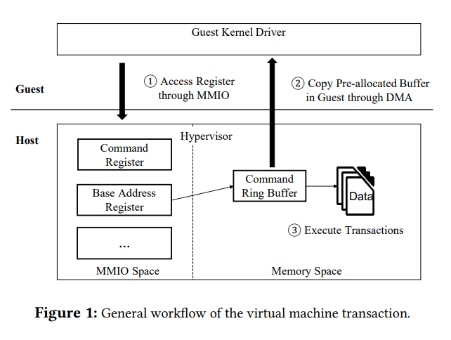
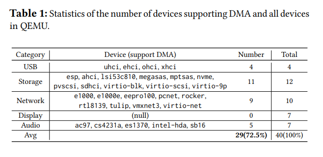
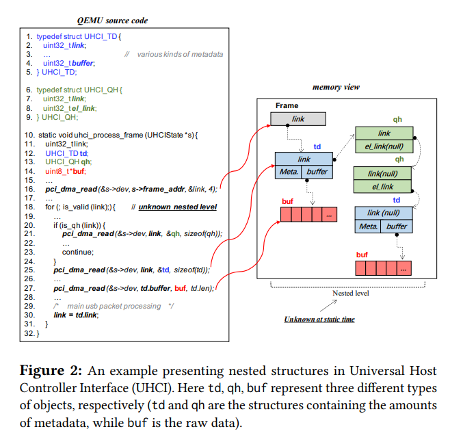
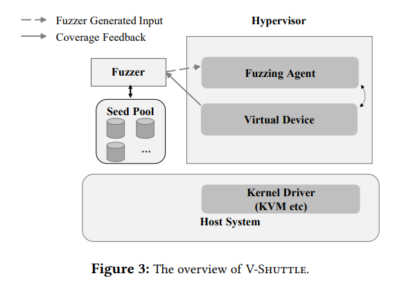
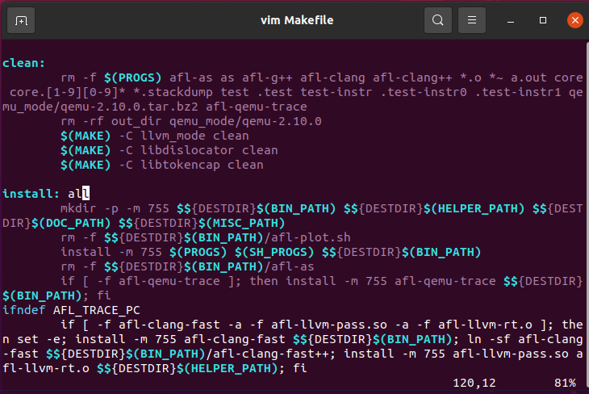
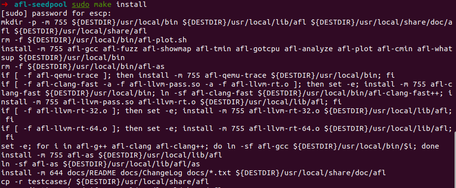
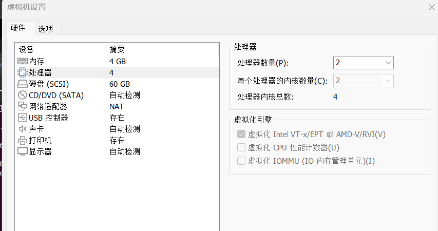
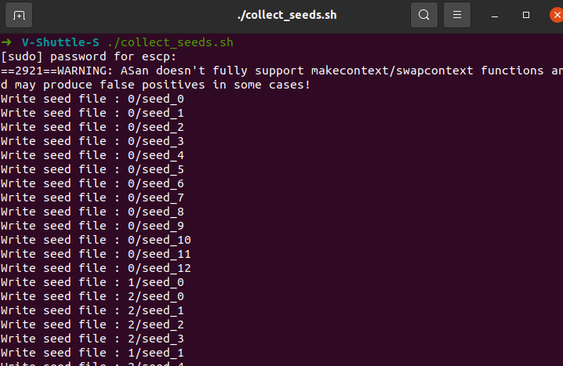
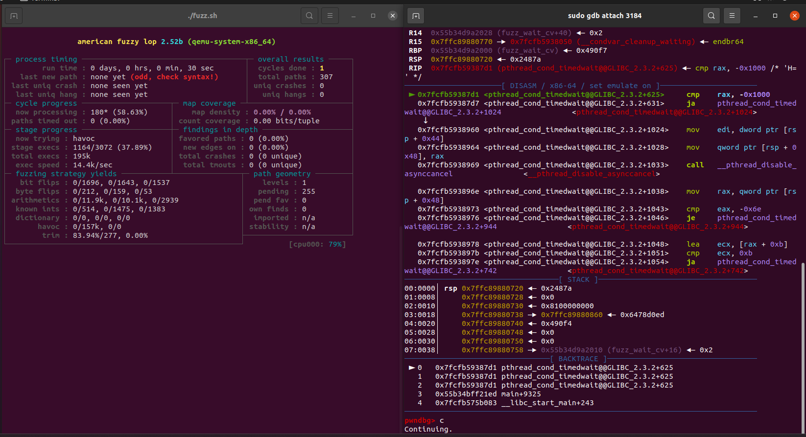

ABSTRACT
hypervisor也被称作Virtual Machine Monitor(VMM),它可以在一台主机中隔离多个虚拟机。可以理解为多个虚拟机的管理核心，但是hypervisor存在利用方式可以做到逃逸和提权。但虚拟机中以DMA(direct memory access)交互的数据结构往往是非常复杂，（可以类比于堆管理等，会有很多结构体，互相之间有很多指针相互指向和连接起来），这篇论文提出了结合FUZZ的方法，寻找DMA交互的漏洞。论文作者创造了V-SHUTTLE,规模化和语义感知的虚拟机模拟设备模糊测试，最终作者通过V-shuttle发现了35个bug，其中17个签发了CVE。
KEYWORDS
Hypervisor; Virtual Device; Fuzzing; Vulnerability
INTRODUCTION
Intro部分主要是ABSTRACT前半部分的扩写。就不做解读了。
BACKGROUND AND MOTIVATION
这部分讲一些关于hypervisor和虚拟机的背景知识，为后面V-shuttle的设计做铺垫。
Virtual Devices of Hypervisors
用户在虚拟机里使用的设备是经hypervisor提供的模拟的硬件，能实现和真实硬件一样，这就意味着在客户虚拟机操作系统中可以驱动虚拟设备。现在的hypervisor能够模拟绝大多数计算机硬件，比如显卡、网卡、usb、储存设备等等。
Driver-Device Interaction
虚拟设备的交互方式有三种，MMIO、PMIO、DMA，前二者我们已经比较熟悉，在CTF的qemu逃逸题目里常有用到。本论文研究重点在DMA，DMA全称是direct memory access。设备的初始化工作往往是由MMIO和PMIO来做的，比如设备注册、地址初始化。初始化完成之后设备开始工作并进行更大型的数据交互，比如usb设备数据传输和网卡的网络数据包传输等，这时候最主要的交互方式就是DMA，因为DMA能进行更大、更复杂的数据的交互。也正因此，这一步也更容易导致安全隐患。下图简单描述了hypervisor虚拟机的交互流程。

如下的表给出了数据交互中用到DMA的虚拟设备：

Core Challenge-Nested Structures
这部分主要是讲在DMA中fuzz的一些困难。hypervisor在进行和DMA相关的数据传输时主要是通过几个重要的API，也就是一些函数比如pci_dma_read和pci_dma_write等，pci_dma_read作用是从客户机里读，也就是就将虚拟机里的数据复制到宿主机的缓冲区中，pci_dma_write则与之相反做的是往虚拟机里写。如果能精确控制地址参数，能实现任意地址读写。
但是经DMA传输的数据往往有很复杂的结构
经DMA传输的数据往往会有很多结构体以及互相指向的指针。会阻碍fuzz。
1)Nested Form Construction.
1、从总体看，由DMA传输的复杂数据可以看成是一层一层的结构，总体形成一个树状结构。每个节点都是数据。同时这个树也可以看成是递归的因为一个树中会包含其他的树作为元素。这样对于传统的fuzz很不友好。
2、从每个节点的角度看，每个节点都是数据+指针的结构。指针在其所处的结构体中地址的偏移也是不确定的。同时其指向应该是一个有意义的地址，如果模糊测试的时候生成了一个节点，其指向是一个完全随机的地址，那就肯定会有问题。因此，在节点层面需要引入语义感知，如此才能生成符合逻辑的结构体类型和指针。也就是说fuzzer需要能够感知数据组织的语义和节点内部的结构。
2)Node Yype Awareness
大多数指针的指向只有在runtime才能被感知。因此，fuzzer需要在运行时才能感知指针的指向，这就需要fuzzer能够感知数据的语义。这样才能生成有意义的数据。
以USB-UHCI为例，UHCI全称Universal Host Controller Interface，作用是往客户虚拟机里提供虚拟USB设备。
其部分结构如下图

指针的细节我就不去阅读了。
处理这种复杂结构的最直白的方法是采用结构感知的模糊测试，结构感知的意思就是基于模型，前者通过模糊测试获得一部分结构特征，后者基于前者的模型继续对所有可能的结构进行模糊测试，如此一来次数多了最终可以得出正确的结构，但问题很明显，时间成本和测试次数都太多。因此V-shuttle的设想是创造一种能够提升效率和准确率的感知方式。
V-SHUTTLE DESIGN
这部分讲述了V-Shuttle的设计
Threat Model
V-Shuttle的攻击测试基于root权限，这很正常因为每个用户在自己的虚拟机里都可以达到root权限。可实现的攻击有DoS、信息泄露、提权。一旦一个客户机能实现逃逸获得hypervisor的shell，那么就可以接管其他在同一个host下的虚拟机。
System Overview

这部分是对V-Shuttle整体结构的描述，
DMA Redirection
Semantics-Aware Fuzzing via SeedPools
Lightweight Fuzzing Loop
IMPLEMENTATION
笔者后记
这篇文章是浙江大学网安学院潘高宁博士在2021年发表的文章，潘博士也是AAA战队的成员，在CTF中主攻pwn方向。这篇文章是他的代表作，凭借这篇文章他获得了ACM年度最佳论文奖，在我们的阅读过程中也感受到了逻辑的条理和严谨。
笔者的导师是模糊测试这方面的研究专家，笔者本人对虚拟机逃逸技术/模糊测试格外痴迷，潘博士所做的研究将二者在某方面完美结合并且获得了巨大成功，在笔者眼里简直就是梦一般的向往。
笔者的导师在上上周把这篇论文发给我了，慢慢吞吞一直看到现在。很巧的是，上周笔者学校的网安学院邀请了潘博士来开了个讲座，笔者怀着激动、兴奋和对知识虔诚的渴望认真听了，也很荣幸在过程中提出了两个问题并得到了解答。
听说潘博士在9月份可能会来笔者学校当老师，希望到时候能跟着他学到更多。
实践-V-shuttle使用初探
因为V-shuttle暂时知名度不高，而且潘博士自从2021年开源之后也没有维护/优化过，github上12个issue没咋回复，readme里也并不非常详细，比如运行环境等都没有注明，所以在搭建的时候可能会遇到一堆问题，比如各种编译报错、启动的时候缺少什么镜像、种子不合适之类的。笔者最近花了一周时间熟悉了一下V-shuttle的部署和使用，可以算作为后人留下一点初步的教程，基于此还可以进行更多优化。
注：
笔者环境：
win11 + VMWARE workstation
linux发行版：Ubuntu20.04.6，系统镜像安装地址：https://releases.ubuntu.com/20.04/
内核：Linux ubuntu 5.15.0-73-generic #80~20.04.1-Ubuntu SMP Wed May 17 14:58:14 UTC 2023 x86_64 x86_64 x86_64 GNU/Linux
安装
直接把整个仓库扒下来就可以
git clone https://github.com/hustdebug/v-shuttle.git
装好后我们发现作者准备了V-shuttle-M和V-shuttle-S，S是增加了语义感知的，M则是基本框架，我这里就直接以S为例。
编译afl
现在我们先到V-shuttle-S目录下，接着进入afl-seedpool
cd afl-seedpool
编译
make
make install
两条命令执行之后都会有如下报错
1 | Oops, the instrumentation does not seem to be behaving correctly! |
按照readme的做法是直接忽略，但我们这里采取github上某个issue里提到的hacky方式，我们执行vim Makefile，然后找到如下：

把install: all改成install，然后再执行
sudo make install
可以看到sudo make install之后不再报错（ps.笔者也不清楚这么做和直接忽略有没有区别以及实际影响大不大，估计是大差不差的，读者可以尝试着这么做也可以尝试忽略）

编译qemu
首先需要获得某个版本的qemu源码，这里以qemu5.1.0为例
在v-shuttle-S目录下：wget https://download.qemu.org/qemu-5.1.0.tar.xz
然后提取一下就可以获得qmeu5.1.0源码文件夹
接着把V-shuttle-S目录下给出的fuzz-seedpool.h 和 hook-write.h 复制到 ./qemu-5.1.0/include目录
然后把memory.c复制到./qemu-5.1.0/softmmu目录，这个目录下本身存在一个memory.c，直接覆盖就可以
接着应用patch，V-shuttle-S目录下作者还给出了patch文件夹，里面有三个patch文件，我们挑其中一个把对应的qemu/hw/usb/文件名，patch成作者给出的样子就可以。
然后到V-shuttle-S/qemu-5.1.0目录下，执行
./configure --enable-debug --enable-sanitizers --enable-gcov --cc=afl-gcc --target-list=x86_64-softmmu
make -j8
编译qemu，这一步笔者之前在Ubuntu22.04遇到过挺多奇奇怪怪的链接问题，到20.04就没有了。
编译成功后会在qemu目录下生成一个x86_64-softmmu文件夹，里面有qemu可执行文件
编译成功之后返回V-shuttle-S目录，执行mkdir in out seed，创建三个文件夹
获取种子
V-shuttle给出了一个生成测试样例输入种子的文件collect_seeds.sh，但是其参数需要做一些修改，我们先cat一下这个文件
1 | ➜ V-Shuttle-S cat collect_seeds.sh |
这里获取种子的方式似乎是用qemu起了一个虚拟机然后收集一些数据，这里最关键的一点就是它需要一个ubuntu镜像，在file=那一个参数的位置。
那么我们以ubuntu-18.04.5-desktop-amd64.iso为例，首先我们在自己指定一个目录下比如我是~/ubuntu_images目录，执行
wget http://old-releases.ubuntu.com/releases/18.04.5/ubuntu-18.04.5-desktop-amd64.iso
然后下载到了ubuntu-18.04.5-desktop-amd64.iso镜像文件，但是我们需要将其转换成qemu所需要的镜像
首先需要用到的工具是qemu-utils，安装指令如下：
sudo apt-get install qemu-utils
然后执行qemu-img convert -f raw -O qcow2 ./ubuntu-18.04.5-desktop-amd64.iso ./ubuntu-18.04.5-desktop-amd64.iso.qcow2，生成了一个新的ubuntu-18.04.5-desktop-amd64.iso.qcow2文件，这才是能够写在file参数里的文件，于是把collect_seeds.sh修改成：
1 | ➜ V-Shuttle-S cat collect_seeds.sh |
然后就可以在V-shuttle-S目录下执行./collect_seed.sh
不出意外就会正常执行了，但意外也有因为我们启用了kvm，可能会有报错cpu不支持kvm
首先考虑没有安装kvm，先执行以下命令安装kvm:
sudo apt install -y qemu-kvm libvirt-daemon-system libvirt-clients bridge-utils
如果还是不能启动，则先检查自己设备的cpu是否支持硬件虚拟化：
grep -Eoc '(vmx|svm)' /proc/cpuinfo，执行这条命令之后如果为大于0的数则说明不是CPU的问题，如果此时不能执行笔者暂时也无法解答。
如果为0表示CPU不支持硬件虚拟化技术，这个时候如果你和笔者一样是用VMWARE workstation虚拟机起的Ubuntu，可以右键虚拟机设置->cpu->虚拟化引擎

关机后勾选这个再开机就可以了。
然后就能正常执行collect_seed.sh，执行效果如下：

fuzz
克服以上问题之后，直接执行./fuzz.sh应该就不会有太大问题，直接跑起来。
可能运行会报如下错误：
1 | [-] Hmm, your system is configured to send core dump notifications to an |
这个只要切换到root用户然后执行它给的这条指令就可以了
gdb attach
这个很简单，在fuzz跑起来的时候看一看进程，sudo gdb attach <pid> 就可以.
最终效果如下：

如果您喜欢此博客或发现它对您有用，则欢迎对此发表评论。 也欢迎您共享此博客，以便更多人可以参与。 如果博客中使用的图像侵犯了您的版权，请与作者联系以将其删除。 谢谢 ！